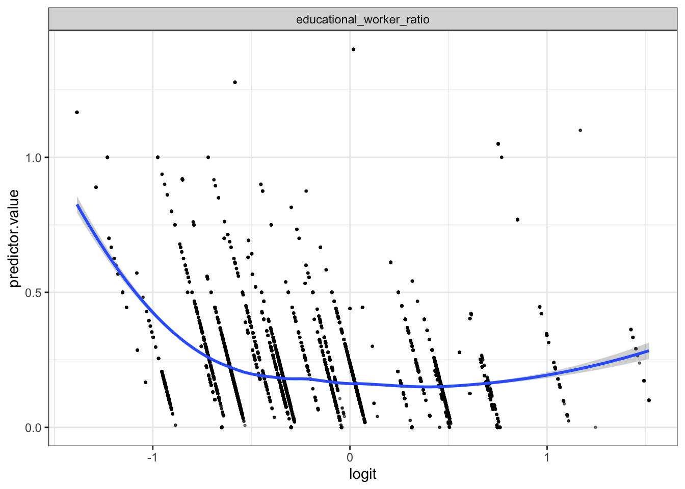

logistic regression
Han Bao
r Sys.Date()
library(tidyverse)
library(broom)
library(viridis)
library(purrr)
library(modelr)
theme_set(theme_classic())child_data = read_csv("./data/DOHMH_Childcare_Center_Inspections.csv") %>%
janitor::clean_names()%>%
distinct()child_data = child_data %>%
select(center_name, borough, zip_code, status, age_range, maximum_capacity,program_type, facility_type,
child_care_type, violation_category,
violation_status,violation_rate_percent:average_critical_violation_rate,regulation_summary,
inspection_summary_result) %>%
drop_na(zip_code, age_range, violation_rate_percent,public_health_hazard_violation_rate, critical_violation_rate) %>%
filter(maximum_capacity != 0) %>%
mutate(
educational_worker_ratio = total_educational_workers/maximum_capacity,
program_type = tolower(program_type),
facility_type = tolower(facility_type),
borough = as.factor(borough),
status = as.factor(status),
program_type = as.factor(program_type),
facility_type = as.factor(facility_type),
child_care_type = as.factor(child_care_type)
)#create binary variable according to regulation_summary
child_data <- child_data %>%
mutate(violation = if_else(.$regulation_summary == 'There were no new violations observed at the time of this inspection/visit.','0','1'),
violation = as.factor(violation))head(child_data, 10)## # A tibble: 10 × 23
## center_name borough zip_c…¹ status age_r…² maxim…³ progr…⁴ facil…⁵ child…⁶
## <chr> <fct> <dbl> <fct> <chr> <dbl> <fct> <fct> <fct>
## 1 TRADITIONAL E… BROOKL… 11221 Expir… 0 YEAR… 60 infant… gdc Child …
## 2 BOYS & GIRL S… BROOKL… 11212 Expir… 0 YEAR… 60 all ag… camp Camp
## 3 ITTY BITTY AD… BROOKL… 11234 Permi… 2 YEAR… 42 presch… gdc Child …
## 4 MAGIC MOMENTS… BROOKL… 11238 Permi… 2 YEAR… 24 presch… gdc Child …
## 5 YELED VYALDA … BROOKL… 11213 Expir… 2 YEAR… 75 presch… gdc Child …
## 6 EAST SIDE HOU… BRONX 10454 Expir… 2 YEAR… 80 presch… gdc Child …
## 7 NAT AZAROW CH… BROOKL… 11212 Permi… 2 YEAR… 98 presch… gdc Child …
## 8 BRIGHT START … QUEENS 11101 Permi… 2 YEAR… 72 presch… gdc Child …
## 9 UNIVERSITY SE… BROOKL… 11201 Expir… 0 YEAR… 550 all ag… camp Camp
## 10 THE FRIENDS O… BROOKL… 11213 Permi… 2 YEAR… 100 presch… gdc Child …
## # … with 14 more variables: violation_category <chr>, violation_status <chr>,
## # violation_rate_percent <dbl>, average_violation_rate_percent <dbl>,
## # total_educational_workers <dbl>, average_total_educational_workers <dbl>,
## # public_health_hazard_violation_rate <dbl>,
## # average_public_health_hazard_violation_rate <dbl>,
## # critical_violation_rate <dbl>, average_critical_violation_rate <dbl>,
## # regulation_summary <chr>, inspection_summary_result <chr>, …###Fit the logistic regression model #fit a logistic regression with violation vs no violation as the outcome and the rest as predictors.And Obtain the estimate and CI of the adjusted odds ratio for having violation.
model_log <- glm(violation ~ status + program_type + facility_type + child_care_type + average_total_educational_workers+average_public_health_hazard_violation_rate+educational_worker_ratio,data = child_data,family = binomial(link=logit))
model_log %>%
broom::tidy(conf.int = T) %>%
mutate(OR = exp(estimate),
CI_lower = exp(exp(conf.low)),
CI_upper = exp(exp(conf.high)),
p_val = rstatix::p_format(p.value, digits = 2)) %>%
select(term, OR, CI_lower,CI_upper, p_val) %>%
knitr::kable(digits = 3, align = "lccc",
col.names = c("Term", "Estimated adjusted OR", "CI lower bound", "CI upper bound", "p-value"))| Term | Estimated adjusted OR | CI lower bound | CI upper bound | p-value |
|---|---|---|---|---|
| (Intercept) | 2.546 | 7.396 | 2.575800e+01 | <0.0001 |
| statusExpired-In Renewal | 0.379 | 1.360 | 1.593000e+00 | <0.0001 |
| statusPermitted | 0.358 | 1.341 | 1.544000e+00 | <0.0001 |
| program_typeinfant toddler | 0.981 | 2.264 | 3.248000e+00 | 0.84 |
| program_typepreschool | 1.060 | 2.485 | 3.434000e+00 | 0.45 |
| program_typeschool age camp | 2.072 | 1.219 | 2.510005e+19 | 0.55 |
| facility_typegdc | NA | NA | NA | NA |
| facility_typesbcc | NA | NA | NA | NA |
| child_care_typeChild Care - Infants/Toddlers | NA | NA | NA | NA |
| child_care_typeChild Care - Pre School | NA | NA | NA | NA |
| child_care_typeSchool Based Child Care | NA | NA | NA | NA |
| average_total_educational_workers | NA | NA | NA | NA |
| average_public_health_hazard_violation_rate | NA | NA | NA | NA |
| educational_worker_ratio | 0.474 | 1.444 | 1.843000e+00 | <0.0001 |
# Predict the probability (p) of violation positivity
probabilities <- predict(model_log, type = "response")
predicted.classes <- ifelse(probabilities > 0.5, "pos", "neg")
head(predicted.classes)## 1 2 3 4 5 6
## "neg" "neg" "neg" "neg" "neg" "neg"#probabilities###visualization
# Extract the adjusted odds ratio (and CI) for solving homicides comparing male victims to female victims from all the cities.
all_logistic = child_data %>%
nest(data = -borough) %>%
mutate(
models = map(data, ~glm(violation ~ status + program_type + facility_type + child_care_type + average_total_educational_workers+average_public_health_hazard_violation_rate+educational_worker_ratio, data = ., family = binomial(link = "logit"))),
results = map(models, ~broom::tidy(.x, conf.int = T))) %>%
select(borough, results) %>%
unnest(results) %>%
mutate(
OR = exp(estimate),
CI_lower = exp(conf.low),
CI_upper = exp(conf.high),
p_val = rstatix::p_format(p.value, digits = 2)
) %>%
filter(term == "statusExpired-In Renewal") %>%
select(borough, OR, CI_lower,CI_upper, p_val)
all_logistic %>%
knitr::kable(digits = 3, align = "llccc", col.names = c("Borough", "Estimated adjusted OR", "CI lower bound", "CI upper bound", "p-value"))| Borough | Estimated adjusted OR | CI lower bound | CI upper bound | p-value |
|---|---|---|---|---|
| BROOKLYN | 0.406 | 0.265 | 0.614 | <0.0001 |
| BRONX | 0.357 | 0.165 | 0.708 | 0.00519 |
| QUEENS | 0.644 | 0.390 | 1.057 | 0.08323 |
| MANHATTAN | 0.592 | 0.413 | 0.843 | 0.00395 |
| STATEN ISLAND | 0.721 | 0.235 | 2.323 | 0.56915 |
# Create a plot showing the estimated ORs and CIs for each borough
all_logistic %>%
mutate(borough = fct_reorder(borough, OR)) %>%
ggplot(aes(x = borough, y = OR)) +
geom_point() +
geom_errorbar(aes(ymin = CI_lower, ymax = CI_upper)) +
theme(axis.text.x = element_text(angle = 90, vjust = 0.5, hjust = 1)) +
labs(x = "Borough", y = "Estimated OR with CI")
###Model diagnostics #1. Remove categorical variables from the original data frame and bind the logit values to the data
#select only numeric preditors
child_data <- child_data %>%
dplyr::select(average_total_educational_workers,average_public_health_hazard_violation_rate,educational_worker_ratio)
predictors <- colnames(child_data)
child_data <- child_data %>%
mutate(logit = log(probabilities/(1-probabilities))) %>%
gather(key = "predictors", value = "predictor.value", -logit)#2. Create the scatter plots:
ggplot(child_data, aes(logit, predictor.value))+
geom_point(size = 0.5, alpha = 0.5) +
geom_smooth(method = "loess") +
theme_bw() +
facet_wrap(~predictors, scales = "free_y")## `geom_smooth()` using formula 'y ~ x'# Extract model results
model_log.data <- augment(model_log) %>%
mutate(index = 1:n())
ggplot(model_log.data, aes(index, .std.resid)) +
geom_point(aes(color = violation), alpha = .5) +
theme_bw()